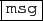

la touche
, servant à faire apparaitre
ou disparaitre une fenêtre de messages facilement lisible grâce à sa
barre de scroll. Cette fenêtre vous donne des messages comme
Success pour dire que tout s'est bien passé, ou affiche une aide
succinte sur la commande choisie à partir du menu général, ou ce qu'il
faut insérer dans votre fichier LATEXpour insérer la figure sauvée,
par exemple, sous le nom session1.eps :
Use \includegraphics[width=\textwidth]{session1}
inside your latex document, with header \usepackage{graphicx}